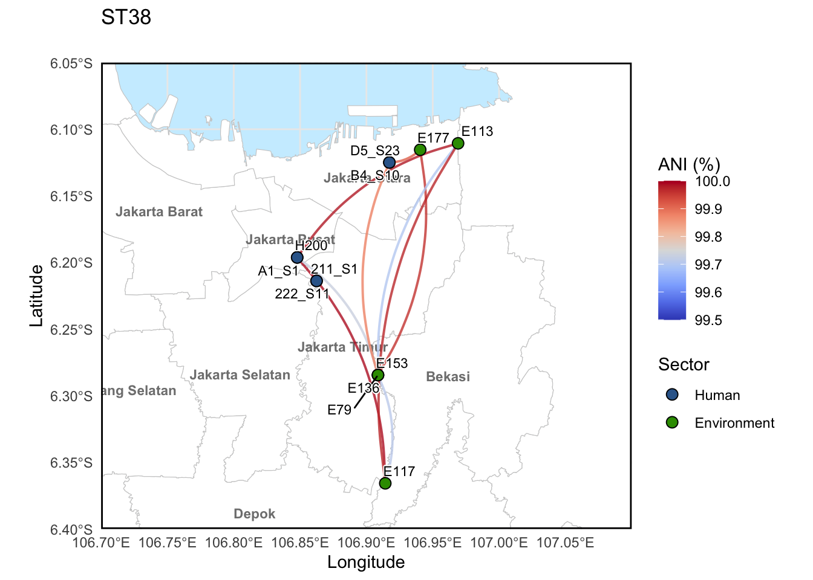

library(sf)
library(ggplot2)
library(osmdata)
library(readxl)
library(dplyr)
library(rnaturalearth)
library(rnaturalearthdata)
library(viridis)
library(tidyr) # For pivoting
library(ggforce) # For pie charts
library(ggrepel)
library(stringr)
library(scatterpie)Geospatial plotting of ANI connections between strains from Jakarta, Indonesia
1. Setting up R
2. Loading data
# 1. Read data
metadata = read.csv("../data/metadata_all_edit2.csv")
locations = read_excel("../data/GPS Data of Environment sampling site_TC.xlsx")3. Wrangle data
# Remove number before locations
locations = locations %>%
mutate(site = sub("^[0-9]+\\.", "", Location))
locations[locations$Location == "Pasar Sawah Barat", "Longitude"] = 106.93
# create a new column with mutations
metadata = metadata %>%
dplyr::mutate(site = sub("^[0-9]+\\.", "", site))
# Merge metadata and coordinates
metadata_mlst = metadata %>%
dplyr::left_join(locations, by = c("site" = "site"))
# Choose
metadata_mlst_2 = metadata_mlst %>%
dplyr::filter(sector == "Human" | sector == "Environment" | sector == "Animal")
write.csv(metadata_mlst_2, "metadata_combined_with_mlst_human_animal_env.csv")4. Making the Jakarta Map
# boundaries
gj_bbox = c(xmin = 106.5, ymin = -6.7, xmax = 107.2, ymax = -5.9)
# Query for city/regency boundaries (admin level 5)
greater_jakarta_admin = opq(bbox = gj_bbox) %>%
add_osm_feature(key = "admin_level", value = "5") %>%
osmdata_sf()
greater_jakarta_map = greater_jakarta_admin$osm_multipolygons
#plot(st_geometry(greater_jakarta_map))
unique(greater_jakarta_map$name) [1] "Jakarta Selatan" "Jakarta Timur" "Kepulauan Seribu"
[4] "Jakarta Pusat" "Jakarta Barat" "Jakarta Utara"
[7] "Tangerang Selatan" "Tangerang" "Kabupaten Tangerang"
[10] "Bekasi" "Depok" "Bogor"
[13] "Kab Bogor" "Kab Bekasi" "Cianjur"
[16] "Karawang" unique(greater_jakarta_map$admin_level)[1] "5"unique(greater_jakarta_map$type)[1] "boundary"gj_filtered = greater_jakarta_map %>%
filter(grepl("Jakarta|Bogor|Bekasi|Depok|Tangerang", name))
labels_df = gj_filtered %>%
st_point_on_surface() %>% # safer than centroid for oddly shaped areas
select(name) %>%
mutate(lon = st_coordinates(.)[,1],
lat = st_coordinates(.)[,2])Warning: st_point_on_surface assumes attributes are constant over geometriesWarning in st_point_on_surface.sfc(st_geometry(x)): st_point_on_surface may not
give correct results for longitude/latitude data5. Plotting ANI Connections
5.1 ANI connections with ST38 strains
This example is for ST38 but all the STs analysed in the study were run the same way.
You can use ctrl + F to replace ST38 with any other ST of interest and the code will run the same.
# 1. Read data
ani_mat_ST38 = read.csv("../data/ST38_ANI_matrix_indonesia_trycycle.csv")
coords = read.csv("../data/metadata_combined_with_mlst_human_animal_env.csv")
colnames = colnames(ani_mat_ST38)
rownames(ani_mat_ST38) = colnames
ani_mat_ST38 = ani_mat_ST38 %>% mutate(sample1 = rownames(ani_mat_ST38), .before = 1)
# 2. Prepare ANI long-format table
ani_long_ST38 = ani_mat_ST38 %>%
pivot_longer(cols = -sample1, names_to = "sample2", values_to = "ANI") %>%
filter(!is.na(ANI))
# 3. Merge coordinates for both ends of each pair
ani_pairs_ST38 = ani_long_ST38 %>%
# Join coords for sample1
dplyr::left_join(coords %>%
select(sample1 = sample_name, lon1 = Longitude, lat1 = Latitude),
by = "sample1") %>%
# Join coords for sample2
dplyr::left_join(coords %>%
select(sample2 = sample_name, lon2 = Longitude, lat2 = Latitude),
by = "sample2")
ani_pairs_ST38 = ani_pairs_ST38 %>% filter(ANI != 100.00)
ani_pairs_ST38 = ani_pairs_ST38 %>% filter(ANI >= 99.5)
ani_pairs_ST38_singles = ani_pairs_ST38 %>%
rowwise() %>%
mutate(
pair_min = min(c_across(c(sample1, sample2))),
pair_max = max(c_across(c(sample1, sample2)))
) %>%
ungroup() %>%
distinct(pair_min, pair_max, .keep_all = TRUE)
ani_pairs_ST38_singles = ani_pairs_ST38_singles %>% filter(!(lon1 == lon2 & lat1 == lat2))
# 1) extract same‑site pairs, keep only the one with max ANI at each location
ani_pairs_ST38_best = ani_pairs_ST38_singles %>%
# 1) define an "unordered" site‐pair via min/max coords
mutate(
lon_min = pmin(lon1, lon2),
lon_max = pmax(lon1, lon2),
lat_min = pmin(lat1, lat2),
lat_max = pmax(lat1, lat2)
) %>%
# 2) group by that unordered pair
group_by(lon_min, lat_min, lon_max, lat_max) %>%
# 3) pick the single row with the highest ANI in each group
slice_max(order_by = ANI, n = 1, with_ties = FALSE) %>%
ungroup() %>%
# 4) drop the helper columns
select(-lon_min, -lon_max, -lat_min, -lat_max)
ani_pairs_ST38# A tibble: 54 × 7
sample1 sample2 ANI lon1 lat1 lon2 lat2
<chr> <chr> <dbl> <dbl> <dbl> <dbl> <dbl>
1 X211_S1 X222_S11 99.9 NA NA NA NA
2 X211_S1 A1_S1 100. NA NA 107. -6.20
3 X211_S1 E113 100. NA NA 107. -6.11
4 X211_S1 E117 100. NA NA 107. -6.37
5 X211_S1 E79 99.7 NA NA 107. -6.28
6 X211_S1 H200 100. NA NA 107. -6.20
7 X222_S11 X211_S1 99.9 NA NA NA NA
8 X222_S11 A1_S1 100. NA NA 107. -6.20
9 X222_S11 E113 100. NA NA 107. -6.11
10 X222_S11 E117 100. NA NA 107. -6.37
# ℹ 44 more rowsani_pairs_ST38_singles# A tibble: 14 × 9
sample1 sample2 ANI lon1 lat1 lon2 lat2 pair_min pair_max
<chr> <chr> <dbl> <dbl> <dbl> <dbl> <dbl> <chr> <chr>
1 A1_S1 E113 100. 107. -6.20 107. -6.11 A1_S1 E113
2 A1_S1 E117 100. 107. -6.20 107. -6.37 A1_S1 E117
3 A1_S1 E79 99.7 107. -6.20 107. -6.28 A1_S1 E79
4 B4_S10 E136 99.9 107. -6.12 107. -6.28 B4_S10 E136
5 B4_S10 E177 99.9 107. -6.12 107. -6.12 B4_S10 E177
6 D5_S23 E136 99.8 107. -6.12 107. -6.28 D5_S23 E136
7 D5_S23 E177 99.9 107. -6.12 107. -6.12 D5_S23 E177
8 E113 E117 100. 107. -6.11 107. -6.37 E113 E117
9 E113 E79 99.7 107. -6.11 107. -6.28 E113 E79
10 E113 H200 100. 107. -6.11 107. -6.20 E113 H200
11 E117 E79 99.7 107. -6.37 107. -6.28 E117 E79
12 E117 H200 100. 107. -6.37 107. -6.20 E117 H200
13 E136 E177 100. 107. -6.28 107. -6.12 E136 E177
14 E79 H200 99.7 107. -6.28 107. -6.20 E79 H200 ST155 = 155
ST410 = 410
ST131 = 131
ST38 = 38
ST10 = 10
ST58 = 58
coords_ST38 = coords %>% filter(ST == ST38)
# Jakarta with ANI connections
sector_key_ST38 = unique(coords_ST38[, c("sector", "sector_colour")])
# Jakarta with ANI connections
# 4. Build the map
p_ST38 = ggplot() +
# Basemap
# gj_filtered has already been created above
geom_sf(data = gj_filtered, fill = "white", color = "grey80") +
geom_text(data = labels_df,
aes(x = lon, y = lat, label = name),
size = 3, fontface = "bold", color = "gray50") +
# Connections: curved segments colored by ANI
geom_curve(data = ani_pairs_ST38_best,
aes(x = lon1, y = lat1, xend = lon2, yend = lat2, color = ANI),
curvature = 0.2, size = 0.7, alpha = 0.8) +
scale_color_gradientn(
colors = c("#3B4DC0", "#6281EA", "#8DB0FE", "#B7CFF9", "#DCDDDD", "#F4C5AD", "#F4997B", "#DD5F4C", "#B40426"),
limits = c(99.50, 100.00),
name = "ANI (%)"
) +
# Sample points
geom_point(data = coords_ST38,
aes(x = Longitude, y = Latitude,
fill = sector_colour),
shape = 21, # circle with fill + border
color = "black", # border colour
size = 3) +
scale_fill_identity(
name = "Sector", # legend title
breaks = sector_key_ST38$sector_colour, # the hex‐codes to show
labels = sector_key_ST38$sector, # the text you want
guide = "legend"
) +
# Sample labels
geom_text_repel(data = coords_ST38,
aes(x = Longitude, y = Latitude, label = sample_name),
size = 3, bg.color = "white", max.overlaps = 20) +
coord_sf(
xlim = c(106.7, 107.1),
ylim = c(-6.4, -6.05),
expand = FALSE
) +
theme_minimal() +
theme(
panel.background = element_rect(fill = "#cceeff", color = NA)) +
theme(legend.position = "right",
panel.border = element_rect(colour = "black", fill=NA, linewidth=1)) +
labs(title = "ST38",
subtitle = " ",
x = "Longitude", y = "Latitude")Warning: Using `size` aesthetic for lines was deprecated in ggplot2 3.4.0.
ℹ Please use `linewidth` instead.# 5. Print the map
print(p_ST38)
ggsave("../imgs/Geospatial_ANI_connections_between_ST38_threshold=99.5_singles.svg", p_ST38, height = 8, width = 8)
ggsave("../imgs/Geospatial_ANI_connections_between_ST38_threshold=99.5_singles.png", p_ST38, height = 8, width = 8)